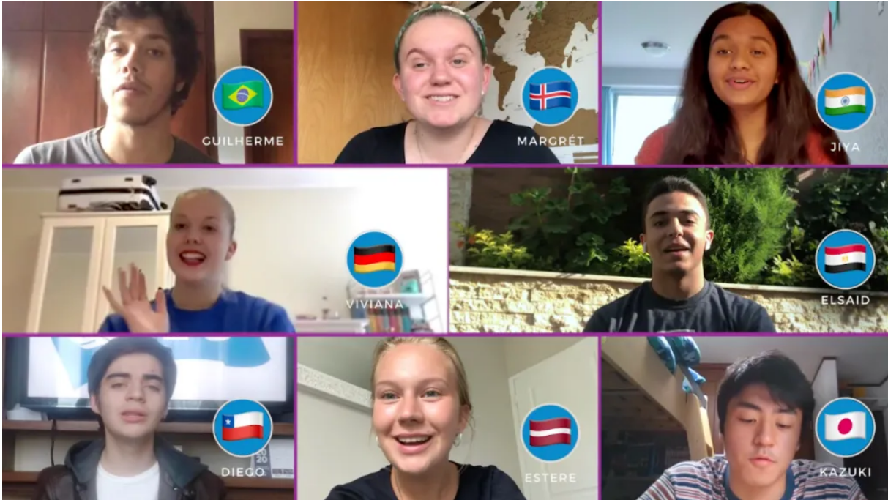

Operation Yellow: Aya's Crusade Against School Bullying
In the realm of social impact, Aya founded and presided over Operation "Yellow," a formidable force combatting school bullying. Picture a tapestry of vibrant workshops, persuasive speeches, and the resounding echo of awareness raised. Aya, as the Board President, not only supports victims but cultivates empathy and fosters a culture of change. Each workshop, each bi-monthly speech is a brushstroke in her canvas of advocacy, leaving an enduring impact on the fight against bullying.
Debating Dynamism on the National Stage
Enter the world of rhetoric and debate, and you'll find Aya at its helm. Selected from thousands, she represents her country on the National British Parliamentary Debate Team. With charisma and eloquence, she shapes her arguments, training tirelessly for international championships. As the head of training and recruitment and team captain at her school's team, Aya's influence on the debate circuit is both profound and magnetic.
Scientific Odyssey: From STEM Ambassador to Published Author
In the world of science and exploration, Aya takes on diverse roles. As the STEM club ambassador, she ignites curiosity and fosters passion among her peers. Imagine her crafting engaging articles in youth magazines, her ideas resonating within the scientific community. Aya isn't simply a science enthusiast; she serves as a spokesperson, an author, and an avid advocate for the wonders of science. Keep an eye out for the upcoming chapters of her scientific journey.
In the proactive world of diplomacy
Aya excels in diplomacy, thriving as both a debater and the Head of Training and Recruitment for ADDIMUN (Model United Nations). With a notable track record as a multi Best Delegate winner, she actively molds the next generation of delegates. Aya transcends the role of a Model UN participant; she stands as a dynamic force, a mentor, and a distinguished ambassador of diplomacy. Additionally, as a current chair (judge) in the AUI team, she continues to contribute to the Model UN community.
Her first steps in the world of socio-entrepreneurship and sponsoring
Her venture into socio-entrepreneurship with Jeunes Leaders Marocains at Al Akhawayn University is nothing short of remarkable. Upon joining the club, her rapid ascent was evident when, within a mere week, she earned the prestigious role of Head of the Sponsoring Committee.
In this capacity, Aya immersed herself in the intricacies of sponsorship, showcasing her adept communication and negotiation skills. She successfully cultivated partnerships, securing crucial support for the club's vision.
Currently, Aya is taking on the role of Project Manager in the JLM (Jeunes Leaders Marocains) National Competition. Her experience leading the Sponsoring Committee not only underscores her leadership prowess but also positions her as a pivotal figure in driving impactful socio-entrepreneurial projects.
Connect Program Fellow: Aya's Dialogues in the Digital Realm

Navigate the virtual landscape with Aya as she serves as a Connect Program Fellow. In the world of online dialogues and global connectivity, Aya actively engages in meaningful discussions through the Soliya Connect Express program. Her knack for cultivating strong relationships with sponsors and her commitment to elevating event quality through distinguished speakers paint a portrait of leadership that goes beyond the ordinary.